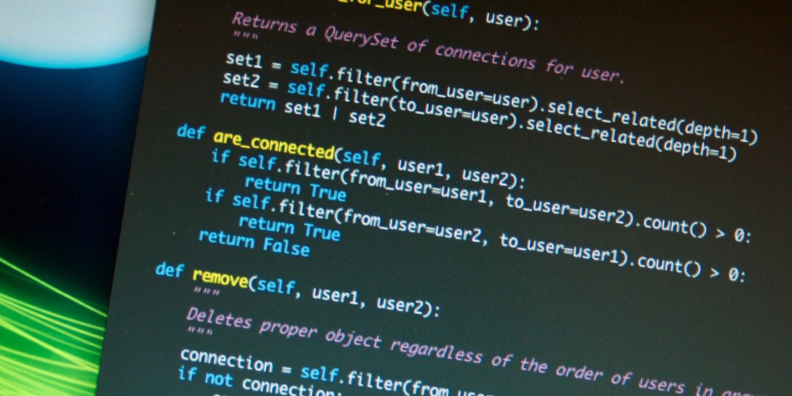

Pada bagian ini, saya akan mencoba membahas bagaimana hubungan filosofi desain Python terhadap desain akhir Python sebagai bahasa pemrograman itu sendiri. Saya akan mencoba membandingkan sejarah Python yang memuat filosofi-filosofi yang mendasari pembentukan Python dengan implementasi Python yang saya gunakan sebagai bahasa pemrograman.
Python menggunakan struktur program yang mirip dengan bahasa pemrograman struktural atau orientasi objek pada umumnya. Misalkan jika dibandingkan dengan bahasa C sebagai bahasa pemrograman yang paling umum dan dasar, Python memiliki variabel global, prosedur, fungsi, dan inti program seperti pada C. Python juga memiliki sintaks percabangan, perulangan, operasi matematika, dan operasi logika seperti pada C. Hal ini sesuai dengan filosofi pertama pada pembuatan Python, yaitu pinjam ide dari mana saja. Filosofi ini juga dapat didasari pada filosofi yang menyebut untuk tidak melawan dan ikuti apa yang sudah ada. Hal ini dilakukan mengingat bahasa ini memang dikembangkan dengan tujuan mempermudah sebuah bahasa yang rumit dan waktu yang juga terbatas.
Namun di balik itu semua, Python menerapkan sejumlah perubahan pada sintaks-sintaks yang diambil, seperti cara penulisan struktur program. Pada Python, fungsi dan prosedur dituliskan dengan cara yang sama, yaitu dengan menggunakan kata kunci ‘def’. Sebenarnya C juga menuliskan fungsi dan prosedur dengan cara yang sama, yaitu dengan menuliskan tipe data dari return value yang diinginkan dengan void untuk prosedur yang berarti tipe data kosong. Namun pada Python, kata kunci def menggantikan semua tipe data return value tersebut, sehingga penulisan fungsi dan prosedur bisa lebih fleksibel. Def akan menyesuaikan dengan return value dari fungsi atau prosedur tersebut.
Program inti pada Python juga dituliskan dengan sangat mudah. Isi inti program dapat langsung dituliskan pada kode program tanpa penanda apapun. Dengan tidak adanya def pada awalan kode yang ditulis, maka hal tersebut secara tidak langsung menandakan bahwa kode tersebut merupakan kode yang dieksekusi sebagai program utama.
Selain struktur program, cara penulisan kode program Python juga berbeda. Pada Python, tidak dikenal tanda titik koma ’;’ sebagai pengakhir suatu kesatuan kode. Python memanfaatkan pemindahan baris dan indentasi yang otomatis menandakan bagaimana program berjalan. Selain itu, tidak dikenal juga tanda kurung kurawal ‘{}’. Tanda yang biasa digunakan pada implementasi fungsi, implementasi prosedur, isi percabangan, maupun isi perulangan ini digantikan dengan hanya tanda titik dua ‘:’ dan seluruh isi dari bagian yang diinginkan cukup diindentasikan ke dalam. Hanya dengan struktur sederhana seperti ini, Python mampu menjalankan program dengan baik dan benar.
Perbedaan lainnya terlihat pada bagaimana Python menuliskan sebuah variabel, baik itu variabel lokal maupun variabel global. Penulisan variabel tidak memerlukan tipe data dari variabel tersebut terlebih dahulu. Hal ini yang membuat Python merupakan bahasa pemrograman yang bersifat dinamis, yaitu variabel yang ada memiliki tipe data yang dapat berubah sewaktu-waktu. Variabel pada Python dapat menyesuaikan dengan tipe data dari data yang akan diisikan ke variabel tersebut.

Kita dapat melihat bahwa ada begitu banyak penyederhanaan yang dilakukan pada pembuatan bahasa Python ini, baik dari penulisan fungsi dan prosedur, program inti, penanda perpindahan kode, maupun cara pendefinisian tipe data pada variabel. Hal ini sesuai dengan filosofi Python di mana segala sesuatu harus dibuat sesederhana mungkin.
Python juga masih mendukung error handling dengan menggunakan kata kunci ‘try’ dan ‘except’. Dengan adanya error handling, maka fitur ini dapat mendukung filosofi Python di mana error tidak boleh menyebabkan hal yang fatal dan error tidak boleh terjadi tanpa ada tanda atau pesan yang dimunculkan.
Namun di balik itu semua, tidak ada bahasa yang sempurna. Ada beberapa kekurangan dari Python, baik yang disebabkan fitur yang dimiliki maupun yang tidak didukung. Berdasarkan data perbandingan performansi bahasa dalam mengerjakan task [6], analisis yang dilakukan seorang user dari situs Stack Overflow beralias ‘marcog’ menjelaskan bahwa data tersebut menggambarkan Python memiliki kecepatan eksekusi empat ratus kali lebih lambat daripada C++. Pengalamannya dalam menggunakan kedua bahasa tersebut juga menggambarkan bahwa Python memiliki kecepatan sekitar sepuluh hingga seratus kali lebih lambat daripada C++ dalam memroses angka [7].
Ada sejumlah alasan yang dipaparkan pengguna Stack Overflow ini. Alasan pertama yaitu Python merupakan bahasa yang diinterpretasi, sedangkan C++ merupakan bahasa yang dikompilasi. Bahasa yang dikompilasi akan langsung mengubah instruksi-instruksi yang ditulis langsung ke dalam bahasa mesin, sedangkan bahasa yang diinterpretasi tidak langsung mengubah instruksi-instruksi yang ditulis ke dalam bahasa mesin, namun dibaca dan dieksekusi dengan program lain [8]. Dengan cara ini, bahasa yang diinterpretasi seperti Python memang memiliki implementasi lebih dinamis, namun hal tersebut membuat bahasa Python lebih lambat.
Alasan lain yang disebutkan yaitu Python tidak memiliki tipe data primitif seperti integer, float, char, string, dan sebagainya. Tipe-tipe data tersebut direpresentasikan dalam Python menjadi sebuah objek. Karena perbedaan tipe data primitif yang hanya menyimpan data dan objek yang memiliki data member dan method, maka hal tersebut menyebabkan pemborosan waktu dan memori pada Python.
Penggunaan tipe data list juga menjadi alasan mengapa Python menjadi lebih lambat secara waktu atau lebih berat secara memori daripada bahasa seperti C++. List yang digunakan pada Python memiliki sifat lebih dinamis daripada list yang ada pada C++. List pada Python mampu menampung apapun tipe data berbeda yang diinginkan pada list yang sama. Oleh karena itu, list yang digunakan akan memakan memori lebih besar karena harus siap menampung semua tipe data yang mungkin.
Hal-hal ini dapat menggambarkan filosofi Python dalam hal penyederhanaan kode program, yaitu tipe-tipe data yang jauh lebih praktis untuk digunakan. Namun di balik itu, performansi yang turun oleh karena kepraktisan ini tidak dapat diatasi oleh Python. Hal ini dimungkinkan karena adanya juga filosofi Python yang menyebutkan bahwa tidak perlu terlalu banyak memikirkan performansi dan tidak perlu berharap proyek tersebut selesai dengan sempurna, namun baik saja sudah cukup.
Untuk menjawab filosofi Python yang menangani masalah ketidak-terikatan Python pada platform tertentu saja, saya telah mencari dari berbagai sumber dan Python memiliki banyak kakas yang dapat diinstalasi untuk mendukung Python yang mampu dijalankan pada cross-platform. Salah satu framework yang mendukung cross-platform bahasa Python yaitu Kivy. Kivy merupakan sebuah framework yang ditujukan untuk pembuatan aplikasi berbasis GUI. Framework milik Python ini dapat digunakan baik untuk Mac, Windows, Linux, Android, maupun iOS [9].
Masih ada sejumlah filosofi yang belum dibahas apa hal yang ada pada Python sekarang ini yang didasari pada filosofi-filosofi tersebut, namun saya rasa saya sudah membahas hal-hal yang paling penting dan paling dirasakan programmer ketika coding dengan menggunakan Python. Dengan ini, dapat dilihat bahwa bahasa Python yang terkenal praktis dan sangat mudah digunakan ini merupakan hasil dari rancangan bahasa yang diatur dengan filosofi-filosofi tertentu dengan sejarah pembuatannya.